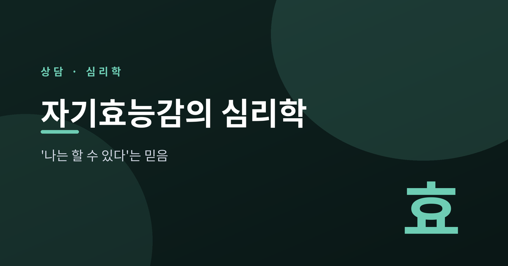
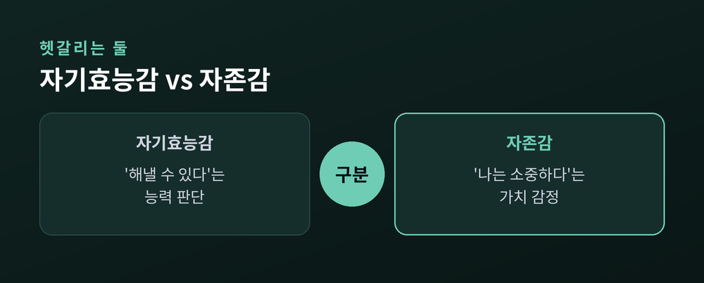
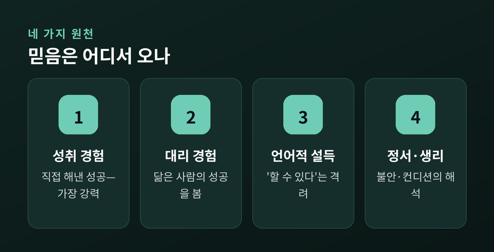
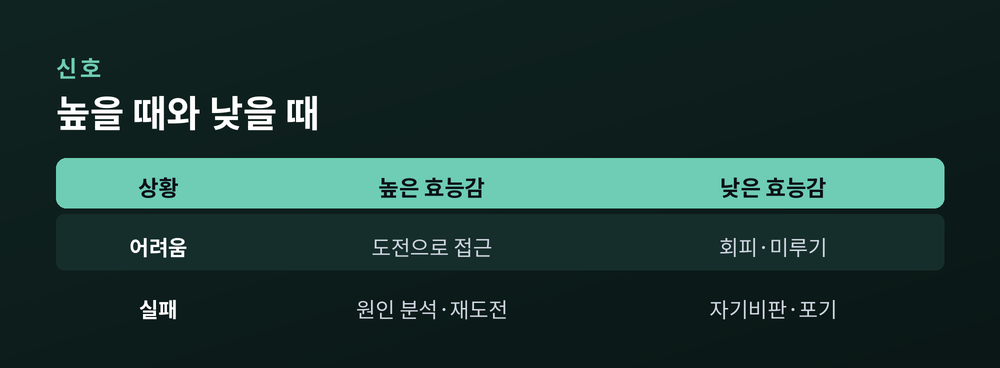
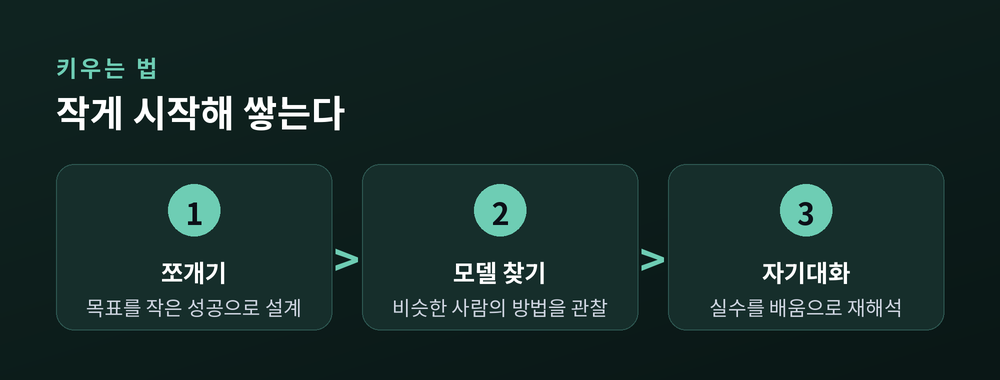

이번 글에서는 자기효능감이라는 개념을 심리학의 눈으로 정리해 보겠습니다.
먼저 결론부터 말씀드립니다. 자기효능감은 타고나는 성격이 아니라, 경험을 통해 자라나는 믿음입니다. '나는 할 수 있다'는 감각은 네 가지 통로를 거쳐 만들어지고, 그래서 설계할 수 있습니다.
이 글은 일반적인 개념 소개일 뿐, 특정 개인에 대한 진단이나 처방이 아닙니다. 자기효능감이 무엇이고, 자존감과 어떻게 다르며, 어디에서 오는지, 그리고 일상에서 어떻게 키우는지를 차례로 살펴보겠습니다.
자기효능감(self-efficacy)은 어떤 목표를 이루는 데 필요한 행동을 내가 해낼 수 있다는 믿음입니다.
심리학자 앨버트 반두라가 1977년 논문에서 처음 체계적으로 제시한 개념입니다. 그는 이것을 "자신의 기능과 자신의 삶에 영향을 미치는 사건을 통제할 수 있다는 신념"이라 정의했습니다.
핵심은 '내가 얼마나 대단한 사람인가'가 아닙니다. '이 과제를, 이 상황을 내가 감당할 수 있는가'라는 능력에 대한 판단입니다.
반두라는 이 개념을 결과 기대나 통제 소재 같은 이웃 개념들과도 구별했습니다. '무엇을 하면 어떤 결과가 온다'는 예측과, '그 행동을 내가 실제로 할 수 있다'는 믿음은 서로 다른 것입니다. 방법을 아는 것과, 그 방법을 실행할 자신이 있는 것은 별개입니다.
그래서 자기효능감은 상황을 탑니다. 발표 앞에서는 낮았다가, 익숙한 업무 앞에서는 높아집니다. 하나의 고정된 수치가 아니라, 영역마다 다른 얼굴을 가진 믿음인 셈입니다.
자기효능감은 자주 자존감과 뒤섞입니다. 그러나 둘은 다른 축입니다.
자기효능감은 "나는 이 일을 해낼 수 있다"는 유능감입니다. 자존감은 "나는 소중한 사람이다"라는 자기 가치의 감정입니다. 하나는 능력에 대한 판단이고, 다른 하나는 존재에 대한 감정입니다.

형성되는 길도 다릅니다. 자기효능감은 뒤에서 볼 네 가지 원천을 통해 만들어집니다. 자존감은 주로 타인과의 비교, 혹은 삶의 여러 영역을 견주는 넓은 비교 속에서 자랍니다.
그래서 둘은 따로 놉니다. 스스로를 귀하게 여기면서도 특정 과제 앞에서는 자신이 없을 수 있습니다. 반대의 경우도 있습니다. "나는 괜찮은 사람이지만 이 발표만은 못 하겠다" — 이 문장이 자연스럽게 들린다면, 두 개념이 왜 구별되는지 이미 느끼신 것입니다.
반두라는 자기효능감이 네 가지 통로에서 온다고 보았습니다. 대략 영향력이 큰 순서로 정리됩니다.

첫째는 성취 경험입니다. 직접 해내 본 성공이 가장 강력합니다. 반복된 성공은 믿음을 단단히 하고, 초반의 반복된 실패는 믿음을 흔듭니다.
둘째는 대리 경험입니다. 나와 닮은 누군가가 해내는 모습을 보면 "나도 되겠다"는 마음이 생깁니다. 모델이 나와 비슷할수록 효과가 큽니다.
셋째는 언어적 설득입니다. "너는 할 수 있어"라는 격려가 믿음을 밀어 올립니다. 다만 성취 경험만큼 강하지는 않고, 근거 없는 칭찬은 오히려 힘을 잃습니다.
넷째는 정서와 생리 상태입니다. 정확히는 그 상태를 어떻게 해석하느냐입니다. 같은 심장 두근거림을 '나는 준비가 안 됐다'로 읽을 수도, '적당히 긴장했다'로 읽을 수도 있습니다.
네 원천은 따로 작동하지 않습니다. 작은 성공(성취 경험)을 곁에서 지켜본 사람이 격려해 주고(언어적 설득), 그 과정에서 긴장이 잦아들면(정서 상태), 하나의 경험이 여러 통로를 동시에 두드립니다. 그래서 효능감은 한 번에 크게 뛰기보다, 여러 겹으로 천천히 쌓입니다.
자기효능감이 낮아지면, 우리는 대개 비슷한 방식으로 움직입니다.
가장 흔한 신호는 미루기입니다. 해낼 수 있을지 확신이 없는 일을 자꾸 뒤로 밉니다. 그 곁에는 회피가 따라옵니다. 감당 못 할 것 같아서 어려운 일을 아예 피합니다.

문제는 이것이 악순환을 만든다는 점입니다. 미루면 효능감이 더 낮아지고, 낮아지면 다시 미룹니다. 실패는 원인 분석 대신 자기비판으로 이어지고, 부정적 자기대화가 굳어집니다.
예전에는 이런 무기력을 게으름이나 의지 부족으로 여겼습니다. 지금은 '해낼 수 있다는 믿음이 얕아진 상태'로 읽습니다. 관점이 바뀌면, 다룰 방법도 보입니다.
자기효능감은 설계할 수 있습니다. 네 가지 원천을 거꾸로 활용하면 됩니다.

먼저 목표를 잘게 쪼갭니다. 큰 목표를 작은 성공으로 나누는 것입니다. 작은 승리는 효능감의 벽돌입니다. '이걸 제대로 끝냈다'고 분명히 말할 수 있을 때, 숙달감이 쌓입니다. 그 작은 성취를 알아차리고 인정하는 것도 중요합니다.
다음은 모델을 찾는 일입니다. 나와 비슷한 사람이 그 일을 해내는 방법을 관찰합니다. 격려하고 지지하는 사람 곁에 머무는 것도 힘이 됩니다. 그들은 내 부정적인 믿음에 조용히 반문해 줍니다.
마지막은 자기대화와 정서를 다루는 일입니다. 실수를 '나는 안 된다'가 아니라 '여기서 배운다'로 다시 읽습니다. 효능감을 갉아먹는 근본 요인 — 피로, 수면 부족 — 을 먼저 돌보는 것도 방법입니다.
이 믿음이 실제로 무엇을 바꾸는지는 연구로도 확인됩니다. 여러 메타분석에서 자기효능감은 업무 수행, 학업 성취, 건강 행동과 꾸준한 관련을 보였습니다. 업무 수행과의 상관은 대략 0.38 수준으로 보고되었고, 18개국 교사를 대상으로 한 분석에서는 직무 만족과의 상관이 0.41로 나타났습니다. 학업 연구에서는 '성공 경험이 효능감을 키우고, 그 효능감이 다시 다음 수행을 지탱한다'는 순환이 특히 뚜렷했습니다. 한 금연 연구에서는 낮은 효능감에 비해 높은 효능감 집단의 금연 성공 가능성이 약 1.6배 높았습니다.
다만 자기효능감이 만능은 아닙니다. 한계도 분명합니다.
이 믿음은 영역에 묶여 있습니다. 한 분야에서 높다고 다른 분야까지 저절로 높아지지 않습니다. 오히려 실제 실력과 동떨어진 과도한 자신감은 준비 부족으로 이어질 수 있습니다.
무엇보다, 성취는 개인의 믿음만으로 결정되지 않습니다. 자원과 기회, 환경과 조건이 함께 작용합니다. "믿으면 다 된다"는 말은 때로 개인에게 너무 많은 책임을 지웁니다. 자기효능감은 삶을 밀어 올리는 힘이지, 모든 것을 설명하는 답은 아닙니다.
끝으로 한 마디만 더 드리겠습니다.
자기효능감은 타고나는 재능이 아니라, 작은 성공을 쌓아 만드는 믿음입니다.
“할 수 있다는 믿음은, 해낸 경험 위에서 자란다.”
작은 것 하나를 오늘 끝까지 해보시길 권합니다. 그 한 번이 다음 믿음의 토대가 됩니다.
덧붙입니다. 무기력이나 미루기, 지속되는 우울이 일상을 흔들 정도라면, 혼자 버티지 마시길 바랍니다. 전문 상담사나 정신건강 기관의 도움을 받는 것은 약함이 아니라 현명한 선택입니다. 이 글은 일반적인 정보일 뿐, 개인의 상태에 대한 진단이 아니라는 점을 다시 말씀드립니다.
</content>